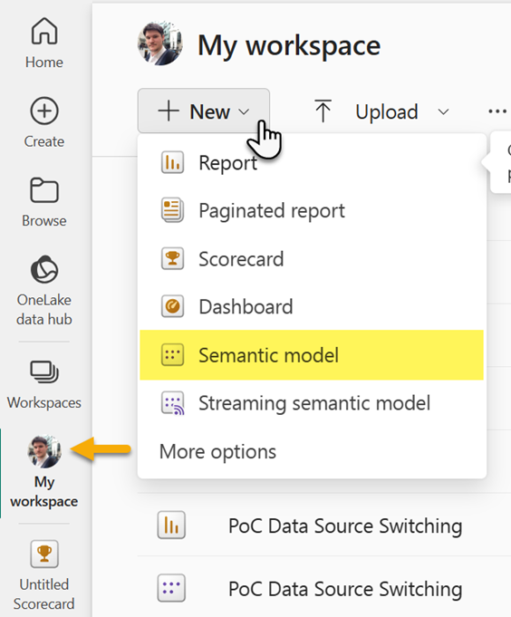
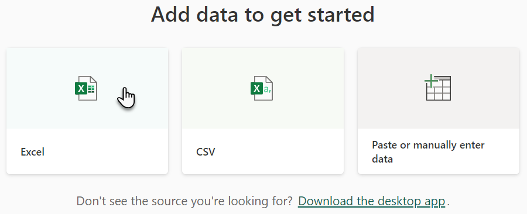
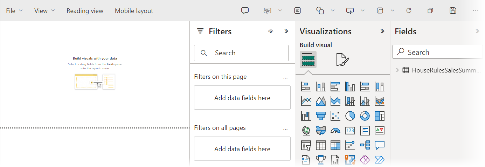

Lab 2 – Build a report in Power BI
 During your first couple of days as
the new business analyst at House Rules Board Games, you have been asked to complete various light tasks. Today, a
senior sales executive has asked you to provide some insights into some data he has compiled from 2017 to 2020
relating to how well different product categories are selling.
During your first couple of days as
the new business analyst at House Rules Board Games, you have been asked to complete various light tasks. Today, a
senior sales executive has asked you to provide some insights into some data he has compiled from 2017 to 2020
relating to how well different product categories are selling.
The data provided is a simple table, it has clear headings and straight-forward information, so it
would not require any complex data modelling to get it ready for a report. This is good news, as we can add the table
as a data source, directly in the Power BI service (web).
The sales executive has asked to plot the categories of product against their sales revenue over time
and add any other insights that you think might be helpful. Let us see what we can do!
Exercise 1 – Connect to an Excel spreadsheet
To add the sales data to our Power BI service as a dataset, we will need a workspace. For the purpose
of our report, we will use ‘my workspace’ which is your own personal area to manage Power BI assets and share them
with others. Our sales data currently resides in our download pack, so let us connect to it.
- In the browser tab that is signed into Microsoft 365, click on the app
launcher then click on All
apps
- In the ‘all apps’ menu, scroll down and click on Power BI

- In the left navigation, select
 Workspace, then click on My workspace
Workspace, then click on My workspace

- Next, ensure your My workspace is selected in the left menu, then click
New > Semantic model

- Under the heading Add data to get started, click on Excel

- At the bottom left of the Select a file window, click Browse this device

- Using file explore, navigate to your download pack, and open Labs > Data sources and select House Rules Sales
Summary.xlsx (spreadsheet) then click Import
- In the ribbon choose the drop down next to Explore
this data > Create a blank report

- The web designer will open, leave this available for the next exercise
